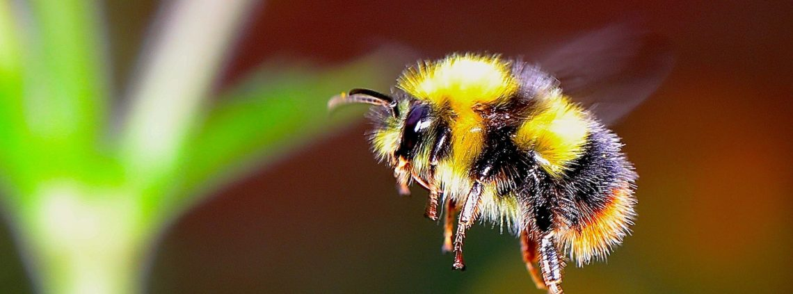

Les bourdons
Très velus et dodus ; ils ont un bourdonnement grave caractéristique du fait de leur taille. Ils ne piquent que lorsqu’ils se sentent menacés (si on les énerve, s’ils sont sur le dos ou si on leur appuie dessus). Ils vivent en petites sociétés sans faire de miel.